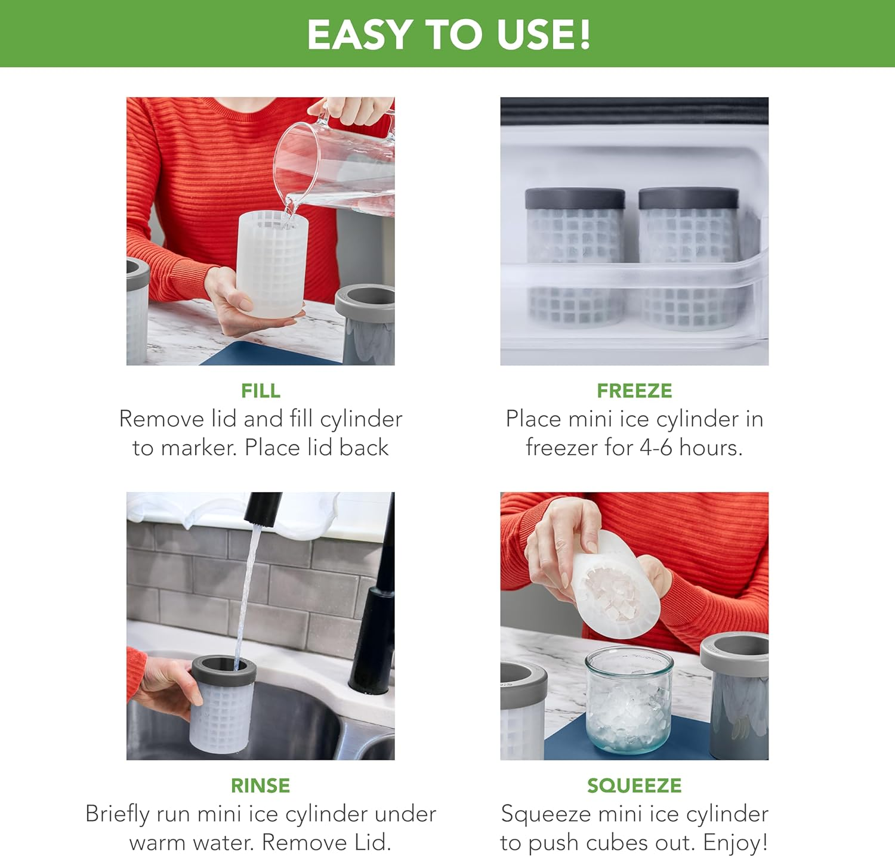
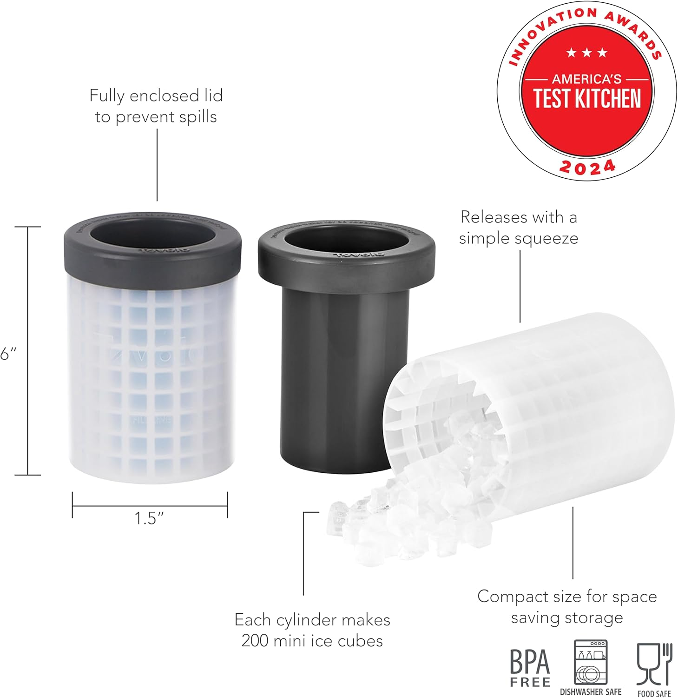

Tovolo Mini Ice Cylinder – Squeeze & Release
Looking for a simple way to chill drinks fast? The Tovolo Mini Ice Cylinder creates tiny cubes that freeze quickly and add a fun twist to any beverage. Each set includes two cylinders that make about 200 mini cubes each.
Here are a few highlights worth noting:
- Two cylinders provide enough mini ice for multiple drinks.
- Mini cubes freeze in just a few hours and chill beverages fast.
- Leak-proof design with a fill line prevents spills and keeps ice clean.
- Four easy steps: fill, freeze, rinse, and squeeze to release.
- BPA-free and dishwasher safe for easy care.



If you want quick-chilling ice with minimal fuss, this cylinder set is an affordable alternative to fancy ice machines.